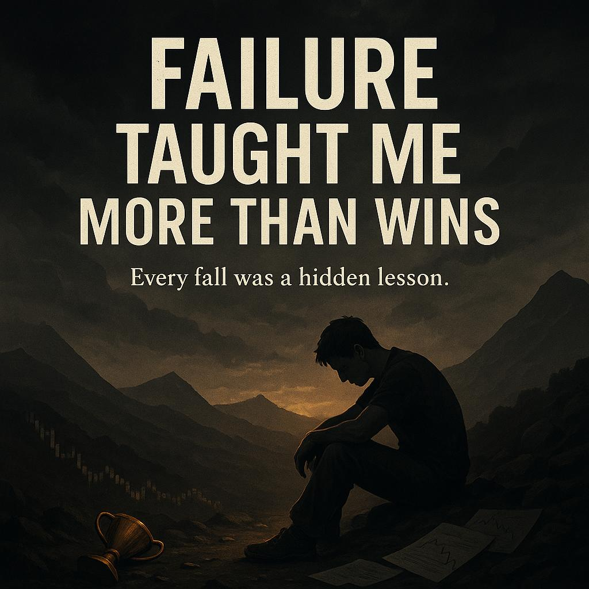

Failure Taught Me More Than Wins
Let’s be honest — losing sucks. Whether it’s blowing a trading account, launching a site that flops, or putting your time into something that didn’t work… it hurts. But hear me loud and clear: failure has been my greatest teacher. Period.
The truth is, every win feels good but teaches little. But every loss? Every mistake? That’s a message straight from life — not to destroy you, but to sharpen you.
My First Big Loss
I remember my first real loss in forex. I had just discovered Boom and Crash. Thought I figured it out — took a small deposit and flipped it fast. Then I got greedy. Ignored my rules. Overleveraged. No stop loss. One spike, and everything disappeared.
I stared at the screen in silence. Phone in my hand. Screen blinking red. And all I could think was: “What just happened?”
That moment hit hard. But I didn’t quit. I went back, reviewed the trade, the mistakes, my mindset. I realized the win before made me careless. But this loss? It made me grow.
Failure Builds Self-Awareness
When you fail, it strips away your ego. You start to see yourself clearly. You ask real questions: “Where did I go wrong?”, “What am I doing blindly?”, “How do I improve from this?”
Most people avoid failure because they don’t want to feel stupid. But trust me bro, looking stupid now is better than staying broke forever.
The Patterns I Noticed
- I lost when I chased money instead of mastering skill.
- I lost when I broke my rules, even if “just once.”
- I lost when I cared more about speed than progress.
- I lost when I let emotions run the show.
Every single one of those losses came with pain, but also with power — the power of clarity. Now I use those Ls as fuel. I never forget them. They guide me daily.
Wins Are Silent, Losses Speak Loud
Wins don’t always demand reflection. You smile, celebrate, move on. But failure forces you to slow down, rewind, and rebuild smarter. That’s why the most successful people have the longest list of failures — not because they’re bad, but because they’re bold.
Fail Fast, Learn Faster
Don’t waste energy avoiding failure. Instead, fail with intention. Try, test, fall, then stand up with knowledge others don’t have. That’s the cheat code. That’s how you level up while others stay stuck.
The Message for Every Grinder
Whether you're trading, flipping products, coding websites on your phone, making beats, or just trying to build something out of nothing — you will fail. And that’s okay. But only if you learn, adapt, and keep pushing.
A lot of people want the glory, but they’re scared of the grind. They want success, but they can’t take the sting of failure. That’s where most fall off.
You? You’re different. Because you’re reading this. Because you’ve failed — maybe recently. And because deep down, you know those losses are shaping you into something greater.
Final Thought
I’ve failed in trading. I’ve failed in love. I’ve failed in tech. But guess what? Each failure gave me a piece of wisdom I carry like armor now. I wouldn’t trade them for anything.
So don’t be ashamed of your Ls. Wear them like badges. Just don’t repeat them. Grow from them. And remember: you either win, or you learn. Both lead to greatness.